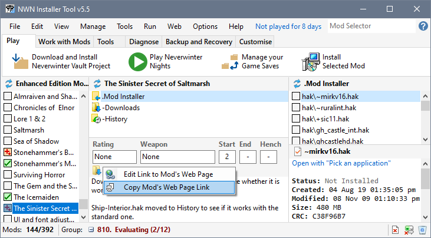
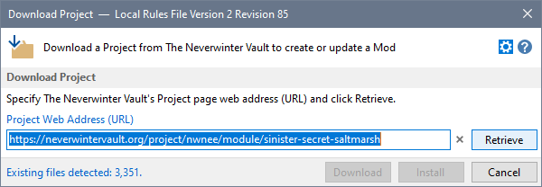
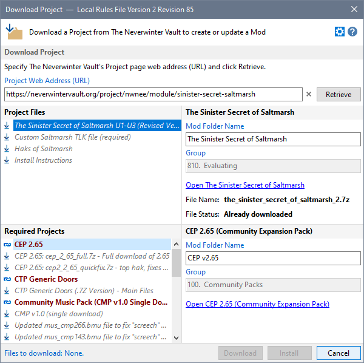
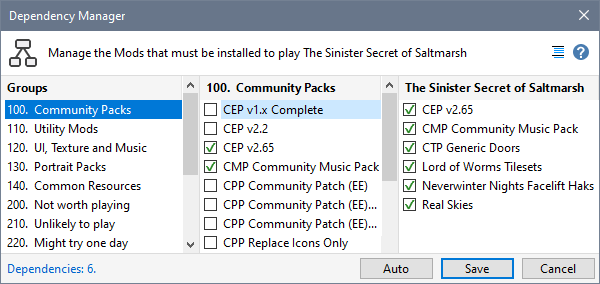

You can use Download Project to automatically define or update a Mod's dependencies.
When you click the Download or Install button in Download Project, the Mod's dependencies are automatically defined.
- Select the Mod for which you want define dependencies and select Copy Mod's Web Page Link from the Edit Menu or by right-clicking Mod Properties.

- Click Download and Install Neverwinter Vault Project from the Play tab and press Retrieve.

- Press Cancel to update the Mod's dependencies.

- Choose Dependency Manager from the Tools Menu to review the dependencies added by Download Project.

Related Topics
Use Download Project to define dependencies
Automate Mod dependency definition